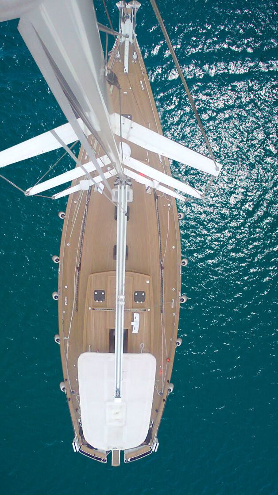
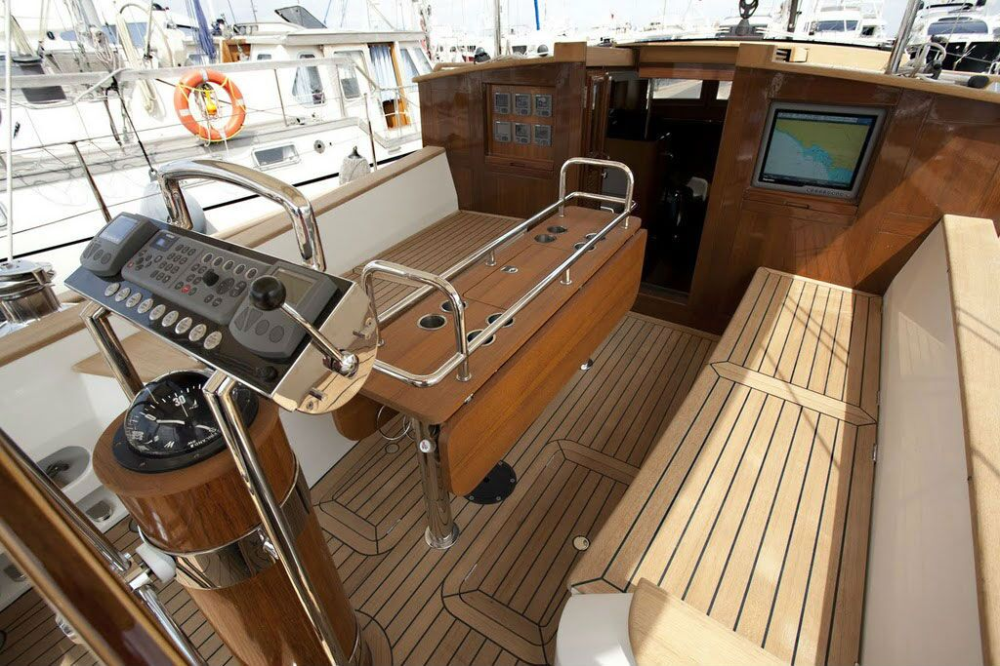
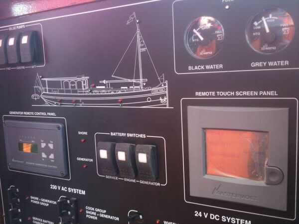
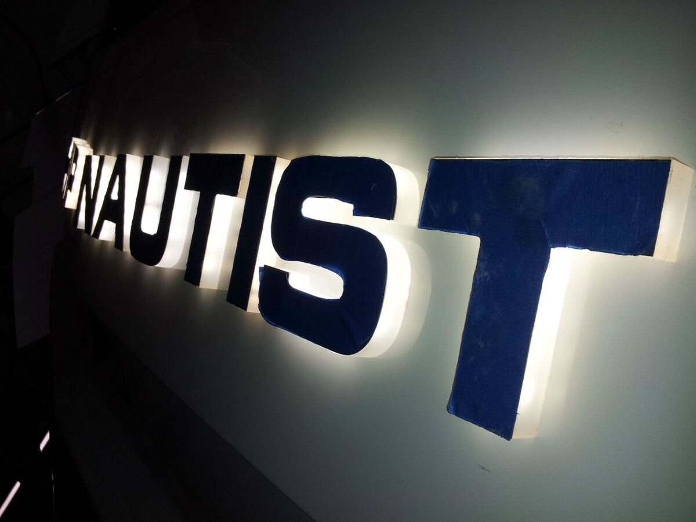

2005'ten bu yana · Tuzla, İstanbul
Yatlar için elektrik ve elektronik çözümler
Projelendirmeden pano imalatına, kablolama ve donatımdan bakım-onarıma kadar teknenizin tüm elektrik sistemleri tek elden.
- Kuruluş
- 2005
- Kuruluş öncesi tecrübe
- 15 yıl
- Referans firma
- 32
- İş ortağı & marka
- 13
Hakkımızda
Teknolojiyi takip eden, projeye özel çözümler
Şirketimiz 15 yıllık tecrübenin ardından, 2005 yılında kuruldu. Denizcilik sektöründe elektrik ve elektronik proje, donatım, bakım-onarım ve servis hizmetleri veriyoruz.
İlk hedefimiz, kaliteli hizmeti ilke edinip teknolojiyi takip ederek yat elektrik donanımında projeye özel, hızlı ve güvenli çözümler sunmak.


Hizmetlerimiz
Teknenin elektrik sistemi, baştan sona
Çizim masasından denize iniş gününe kadar, her aşamada aynı ekip.
Elektrik projelendirme
Teknenin AC ve DC elektrik şemalarını, yük dağılımını ve pano yerleşimlerini ihtiyaca göre çiziyoruz.
AyrıntılarKumanda panelleri
Kaptan köşkü konsollarını seyir cihazları ve göstergelerle birlikte, tekneye özel olarak imal ediyoruz.
AyrıntılarSigorta ve alarm panoları
Tekne silüeti işlenmiş 12V/24V DC ve 230V AC dağıtım, sigorta ve alarm panolarını tasarlayıp üretiyoruz.
AyrıntılarKablolama ve altyapı
Kablo kanalları, bağlantı kutuları, akü bağlantıları ve güç dağıtımıyla teknenin elektrik altyapısını kuruyoruz.
AyrıntılarIşıklı tekne yazıları
LED arka aydınlatmalı ve paslanmaz harf tekne isim yazılarını tasarlıyor, elektrik sistemine bağlıyoruz.
AyrıntılarÜrün satışı, bakım ve servis
Temsil ettiğimiz markaların ürünlerini temin ediyor, montajını, bakım-onarımını ve servisini yapıyoruz.
AyrıntılarProjelerimiz
Sahadan kareler
Teslim ettiğimiz teknelerden, imal ettiğimiz panolardan ve altyapı işlerimizden seçmeler.
Çalışma şeklimiz
Çizimden teslimata altı adım
-
01
İhtiyaç analizi
Teknenin kullanım amacını, tüketicilerini ve enerji kaynaklarını birlikte belirliyoruz.
-
02
Projelendirme
Tek hat şemalarını, pano yerleşimlerini ve kablo güzergâhlarını çiziyoruz.
-
03
Pano imalatı
Kumanda, sigorta ve alarm panolarını tekneye özel olarak üretiyoruz.
-
04
Montaj ve kablolama
Altyapıyı kuruyor, cihazları ve panoları yerine bağlıyoruz.
-
05
Test ve devreye alma
Bütün devreleri tek tek deniyor, sistemi çalışır halde teslim ediyoruz.
-
06
Bakım ve servis
Teslimden sonra da bakım, onarım ve yenilemelerde yanınızdayız.

Tekne yazıları
Teknenizin adı, gece de görünsün
LED arka aydınlatmalı ve paslanmaz harf tekne isim yazılarını, teknenin elektrik sistemine uygun şekilde tasarlayıp montajını yapıyoruz.
Tekne yazılarıİş ortaklarımız
Dünya markalarıyla çalışıyoruz
Satışını ve servisini yaptığımız markalar ile birlikte çalıştığımız tersaneler.
- Mastervolt
- Intellian
- Tecma by Thetford
- Atlas Marine Systems
- Marine Air Systems
- Cruisair
- Horizon Reverse Osmosis
- Max
Referanslar
Bize güvenen 32 firma
- Numarine Denizcilik
- Kale Endüstri Holding
- Enka İnşaat ve San. A.Ş.
- Teknomar Denizcilik
- Çıpa Marina
- Sanovel İlaç Sanayi
- Labranda Denizcilik
- Ses Yacht
Teknenizin elektrik sistemi için bize ulaşın
Yeni bir proje, bir yenileme ya da bir arıza: ilk görüşmeyi telefonda yapalım.